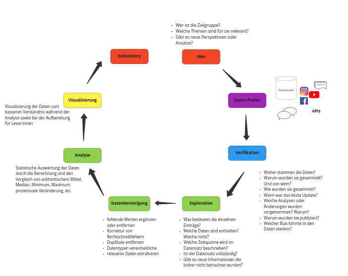

Visualisierung
Contents
Visualisierung#
Ziel#
Wir visualisieren die Daten im EM-DAT Datensatz

# Install a pip package im Jupyter Notebook
!pip3 install pandas
Defaulting to user installation because normal site-packages is not writeable
Requirement already satisfied: pandas in /home/natalie/.local/lib/python3.9/site-packages (1.5.1)
Requirement already satisfied: numpy>=1.20.3 in /home/natalie/.local/lib/python3.9/site-packages (from pandas) (1.23.4)
Requirement already satisfied: python-dateutil>=2.8.1 in /home/natalie/.local/lib/python3.9/site-packages (from pandas) (2.8.2)
Requirement already satisfied: pytz>=2020.1 in /home/natalie/.local/lib/python3.9/site-packages (from pandas) (2022.6)
Requirement already satisfied: six>=1.5 in /usr/lib/python3/dist-packages (from python-dateutil>=2.8.1->pandas) (1.14.0)
import pandas as pd
data = pd.read_csv('../../data/clean_emdat.csv', index_col=0)
data
| Year | Country | Disaster Subroup | Disaster Type | Disaster Subtype | Total Events | Total Affected | Total Deaths | Total Damage (USD, original) | CPI | |
|---|---|---|---|---|---|---|---|---|---|---|
| 1 | 1900 | Cabo Verde | Climatological | Drought | Drought | 1 | 11000.0 | 11000.0 | NaN | 3.077091 |
| 2 | 1900 | India | Climatological | Drought | Drought | 1 | 1250000.0 | 1250000.0 | NaN | 3.077091 |
| 3 | 1900 | Jamaica | Hydrological | Flood | No Subtype | 1 | 300.0 | 300.0 | NaN | 3.077091 |
| 4 | 1900 | Japan | Geophysical | Volcanic activity | Ash fall | 1 | 30.0 | 30.0 | NaN | 3.077091 |
| 5 | 1900 | Turkey | Geophysical | Earthquake | Ground movement | 1 | 140.0 | 140.0 | NaN | 3.077091 |
| ... | ... | ... | ... | ... | ... | ... | ... | ... | ... | ... |
| 10338 | 2022 | Yemen | Hydrological | Flood | Flash flood | 1 | 3400.0 | 13.0 | NaN | NaN |
| 10339 | 2022 | South Africa | Hydrological | Flood | No Subtype | 7 | 143119.0 | 562.0 | 3.164000e+09 | NaN |
| 10340 | 2022 | Zambia | Hydrological | Flood | No Subtype | 1 | 15000.0 | 3.0 | NaN | NaN |
| 10341 | 2022 | Zimbabwe | Hydrological | Flood | No Subtype | 1 | 0.0 | 0.0 | NaN | NaN |
| 10342 | 2022 | Zimbabwe | Meteorological | Storm | Tropical cyclone | 1 | 3000.0 | 0.0 | NaN | NaN |
10342 rows × 10 columns
data.info()
<class 'pandas.core.frame.DataFrame'>
Int64Index: 10342 entries, 1 to 10342
Data columns (total 10 columns):
# Column Non-Null Count Dtype
--- ------ -------------- -----
0 Year 10342 non-null int64
1 Country 10342 non-null object
2 Disaster Subroup 10342 non-null object
3 Disaster Type 10342 non-null object
4 Disaster Subtype 10342 non-null object
5 Total Events 10342 non-null int64
6 Total Affected 10342 non-null float64
7 Total Deaths 10342 non-null float64
8 Total Damage (USD, original) 3796 non-null float64
9 CPI 10149 non-null float64
dtypes: float64(4), int64(2), object(4)
memory usage: 888.8+ KB
Das Dashboard…#
Recherchefragen#
Wie viele Todesopfer gibt es in einem Land?
Wie stark ist ein Land von Naturkatastrophen betroffen?
Welchen Anteil haben die unterschiedlichen Naturkatastrophentypen daran?
Wie hat sich die Anzahl der Naturkatastrophen über die Jahre hin entwickelt?
Wie viele Todesopfer gibt es in einem Land?#
Wie viele Todesopfer gibt es insgesamt?#
data["Total Deaths"].sum()
22845977.0
Wie viele Todesopfer gibt es insgesamt in Deutschland?#
data['Country'] == 'Germany'
1 False
2 False
3 False
4 False
5 False
...
10338 False
10339 False
10340 False
10341 False
10342 False
Name: Country, Length: 10342, dtype: bool
data[data['Country'] == 'Germany']
| Year | Country | Disaster Subroup | Disaster Type | Disaster Subtype | Total Events | Total Affected | Total Deaths | Total Damage (USD, original) | CPI | |
|---|---|---|---|---|---|---|---|---|---|---|
| 3121 | 1990 | Germany | Meteorological | Storm | No Subtype | 6 | 64.0 | 64.0 | 4.440000e+09 | 48.218797 |
| 3289 | 1991 | Germany | Meteorological | Storm | No Subtype | 1 | 0.0 | 0.0 | 5.000000e+06 | 50.260853 |
| 3431 | 1992 | Germany | Geophysical | Earthquake | Ground movement | 1 | 1525.0 | 1.0 | 5.000000e+07 | 51.783162 |
| 3432 | 1992 | Germany | Hydrological | Flood | No Subtype | 1 | 0.0 | 0.0 | 3.010000e+07 | 51.783162 |
| 3582 | 1993 | Germany | Hydrological | Flood | Riverine flood | 1 | 100000.0 | 5.0 | 6.000000e+08 | 53.311620 |
| ... | ... | ... | ... | ... | ... | ... | ... | ... | ... | ... |
| 9469 | 2019 | Germany | Meteorological | Storm | Convective storm | 1 | 1.0 | 1.0 | NaN | 94.349092 |
| 9708 | 2020 | Germany | Meteorological | Storm | Extra-tropical storm | 1 | 33.0 | 0.0 | NaN | 95.512967 |
| 9952 | 2021 | Germany | Hydrological | Flood | No Subtype | 1 | 1000.0 | 197.0 | 4.000000e+10 | 100.000000 |
| 9953 | 2021 | Germany | Meteorological | Storm | Convective storm | 2 | 604.0 | 1.0 | NaN | 100.000000 |
| 10188 | 2022 | Germany | Meteorological | Storm | Extra-tropical storm | 3 | 2.0 | 7.0 | NaN | NaN |
66 rows × 10 columns
data[data['Country'] == 'Germany']['Total Deaths'].sum()
9918.0
data_germany = data[data['Country'] == 'Germany']
data_germany['Total Deaths'].sum()
9918.0
Wie viele Todesopfer gab es insgesamt in Indien?#
data_land = data[data['Country'] == 'India']
data_land['Total Deaths'].sum()
4591827.0
Allgemeine Funktion die Gesamtzahl der Todesopfer eines Landes ausgibt#
def get_total_deaths(data, country):
data_land = data[data['Country'] == country]
return data_land['Total Deaths'].sum()
get_total_deaths(data, 'Japan')
239400.0
get_total_deaths(data, 'Sweden')
43.0
get_total_deaths(data, 'South Africa')
2576.0
Dashboard Teil II#
Welchen Anteil haben die unterschiedlichen Naturkatastrophentypen in Deutschland?#
germany_data = data[data['Country'] == 'Germany']
germany_data['Disaster Type'].value_counts(normalize=True)
Storm 0.545455
Flood 0.242424
Extreme temperature 0.166667
Earthquake 0.030303
Landslide 0.015152
Name: Disaster Type, dtype: float64
Visualisierung von DataFrames#
Matplotlib is a comprehensive library for creating static, animated, and interactive visualizations in Python.
Matplotlib makes easy things easy and hard things possible.
Install matplotlib:
!pip3 install --upgrade pip
!pip3 install --upgrade Pillow
!pip3 install matplotlib
import matplotlib.pyplot as plt
Defaulting to user installation because normal site-packages is not writeable
Requirement already satisfied: pip in /home/natalie/.local/lib/python3.9/site-packages (22.3.1)
Defaulting to user installation because normal site-packages is not writeable
Requirement already satisfied: Pillow in /home/natalie/.local/lib/python3.9/site-packages (9.4.0)
Defaulting to user installation because normal site-packages is not writeable
Requirement already satisfied: matplotlib in /home/natalie/.local/lib/python3.9/site-packages (3.6.2)
Requirement already satisfied: python-dateutil>=2.7 in /home/natalie/.local/lib/python3.9/site-packages (from matplotlib) (2.8.2)
Requirement already satisfied: numpy>=1.19 in /home/natalie/.local/lib/python3.9/site-packages (from matplotlib) (1.23.4)
Requirement already satisfied: contourpy>=1.0.1 in /home/natalie/.local/lib/python3.9/site-packages (from matplotlib) (1.0.6)
Requirement already satisfied: packaging>=20.0 in /home/natalie/.local/lib/python3.9/site-packages (from matplotlib) (21.3)
Requirement already satisfied: pillow>=6.2.0 in /home/natalie/.local/lib/python3.9/site-packages (from matplotlib) (9.4.0)
Requirement already satisfied: kiwisolver>=1.0.1 in /home/natalie/.local/lib/python3.9/site-packages (from matplotlib) (1.4.4)
Requirement already satisfied: fonttools>=4.22.0 in /home/natalie/.local/lib/python3.9/site-packages (from matplotlib) (4.38.0)
Requirement already satisfied: cycler>=0.10 in /home/natalie/.local/lib/python3.9/site-packages (from matplotlib) (0.11.0)
Requirement already satisfied: pyparsing>=2.2.1 in /home/natalie/.local/lib/python3.9/site-packages (from matplotlib) (3.0.9)
Requirement already satisfied: six>=1.5 in /usr/lib/python3/dist-packages (from python-dateutil>=2.7->matplotlib) (1.14.0)
germany_data = data[data['Country'] == 'Germany']
germany_data['Disaster Type'].value_counts()
Storm 36
Flood 16
Extreme temperature 11
Earthquake 2
Landslide 1
Name: Disaster Type, dtype: int64
germany_data['Disaster Type'].value_counts().plot(kind='bar')
<AxesSubplot: >
germany_data['Disaster Type'].value_counts().plot(kind='pie')
<AxesSubplot: ylabel='Disaster Type'>
Recherchefragen#
Welche Naturkatastrophen fordern die meisten Todesopfer?#
.groupby() gruppiert einen DataFrame nach den Werten einer oder mehreren Spalten.
Die Spalten nach denen man Gruppieren möchte werden als Argument übergeben. Danach folgt die gewünschte Berechnung auf dieser Gruppe. Das Ergebnis wird als DataFrame zurückgegeben.
data
| Year | Country | Disaster Subroup | Disaster Type | Disaster Subtype | Total Events | Total Affected | Total Deaths | Total Damage (USD, original) | CPI | |
|---|---|---|---|---|---|---|---|---|---|---|
| 1 | 1900 | Cabo Verde | Climatological | Drought | Drought | 1 | 11000.0 | 11000.0 | NaN | 3.077091 |
| 2 | 1900 | India | Climatological | Drought | Drought | 1 | 1250000.0 | 1250000.0 | NaN | 3.077091 |
| 3 | 1900 | Jamaica | Hydrological | Flood | No Subtype | 1 | 300.0 | 300.0 | NaN | 3.077091 |
| 4 | 1900 | Japan | Geophysical | Volcanic activity | Ash fall | 1 | 30.0 | 30.0 | NaN | 3.077091 |
| 5 | 1900 | Turkey | Geophysical | Earthquake | Ground movement | 1 | 140.0 | 140.0 | NaN | 3.077091 |
| ... | ... | ... | ... | ... | ... | ... | ... | ... | ... | ... |
| 10338 | 2022 | Yemen | Hydrological | Flood | Flash flood | 1 | 3400.0 | 13.0 | NaN | NaN |
| 10339 | 2022 | South Africa | Hydrological | Flood | No Subtype | 7 | 143119.0 | 562.0 | 3.164000e+09 | NaN |
| 10340 | 2022 | Zambia | Hydrological | Flood | No Subtype | 1 | 15000.0 | 3.0 | NaN | NaN |
| 10341 | 2022 | Zimbabwe | Hydrological | Flood | No Subtype | 1 | 0.0 | 0.0 | NaN | NaN |
| 10342 | 2022 | Zimbabwe | Meteorological | Storm | Tropical cyclone | 1 | 3000.0 | 0.0 | NaN | NaN |
10342 rows × 10 columns
data['Total Deaths'].sum()
22845977.0
data.groupby('Disaster Type')['Total Deaths'].sum()
Disaster Type
Animal accident 12.0
Drought 11733889.0
Earthquake 2343594.0
Extreme temperature 194056.0
Flood 7002950.0
Fog 4000.0
Glacial lake outburst 262.0
Insect infestation 0.0
Landslide 67417.0
Mass movement (dry) 4644.0
Storm 1403607.0
Volcanic activity 86893.0
Wildfire 4653.0
Name: Total Deaths, dtype: float64
data.groupby('Disaster Type').sum()
/tmp/ipykernel_156143/3612715955.py:1: FutureWarning: The default value of numeric_only in DataFrameGroupBy.sum is deprecated. In a future version, numeric_only will default to False. Either specify numeric_only or select only columns which should be valid for the function.
data.groupby('Disaster Type').sum()
| Year | Total Events | Total Affected | Total Deaths | Total Damage (USD, original) | CPI | |
|---|---|---|---|---|---|---|
| Disaster Type | ||||||
| Animal accident | 2014 | 1 | 5.000000e+00 | 12.0 | 0.000000e+00 | 87.366298 |
| Drought | 1543555 | 792 | 2.869852e+09 | 11733889.0 | 2.098881e+11 | 43039.824471 |
| Earthquake | 2134925 | 1576 | 2.052983e+08 | 2343594.0 | 8.653494e+11 | 46522.663819 |
| Extreme temperature | 1115693 | 607 | 1.038223e+08 | 194056.0 | 6.886634e+10 | 38106.532522 |
| Flood | 7604541 | 5730 | 3.967537e+09 | 7002950.0 | 9.771118e+11 | 239869.775450 |
| Fog | 1952 | 1 | 4.000000e+03 | 4000.0 | 0.000000e+00 | 9.822074 |
| Glacial lake outburst | 4043 | 3 | 3.600000e+01 | 262.0 | 2.100000e+08 | 100.000000 |
| Insect infestation | 183314 | 95 | 2.802200e+06 | 0.0 | 2.292000e+08 | 4880.908507 |
| Landslide | 1277348 | 789 | 1.480567e+07 | 67417.0 | 1.125893e+10 | 36989.405750 |
| Mass movement (dry) | 93320 | 48 | 3.105800e+04 | 4644.0 | 2.090000e+08 | 2269.255805 |
| Storm | 5473348 | 4579 | 1.256494e+09 | 1403607.0 | 1.749046e+12 | 149355.146763 |
| Volcanic activity | 457628 | 269 | 1.004262e+07 | 86893.0 | 6.326912e+09 | 12030.182594 |
| Wildfire | 744227 | 453 | 1.836880e+07 | 4653.0 | 1.290320e+11 | 23624.803026 |
.groupby() kann auch auf mehrere Spalten gleichzeitig angewendet werden
data.groupby(['Disaster Type', 'Disaster Subtype'])['Total Deaths'].sum()
Disaster Type Disaster Subtype
Animal accident No Subtype 12.0
Drought Drought 11733812.0
No Subtype 77.0
Earthquake Ground movement 2075949.0
No Subtype 221.0
Tsunami 267424.0
Extreme temperature Cold wave 17765.0
Heat wave 172555.0
Severe winter conditions 3736.0
Flood Coastal flood 5352.0
Flash flood 70835.0
No Subtype 2480837.0
Riverine flood 4445926.0
Fog No Subtype 4000.0
Glacial lake outburst No Subtype 262.0
Insect infestation Grasshopper 0.0
Locust 0.0
No Subtype 0.0
Landslide Avalanche 5227.0
Landslide 41435.0
Mudslide 4913.0
No Subtype 15427.0
Rockfall 128.0
Subsidence 287.0
Mass movement (dry) Avalanche 349.0
Landslide 3774.0
No Subtype 10.0
Rockfall 477.0
Subsidence 34.0
Storm Convective storm 22730.0
Extra-tropical storm 558.0
No Subtype 25135.0
Tropical cyclone 1355184.0
Volcanic activity Ash fall 85831.0
Lava flow 33.0
No Subtype 516.0
Pyroclastic flow 513.0
Wildfire Forest fire 3334.0
Land fire (Brush, Bush, Pasture) 966.0
No Subtype 353.0
Name: Total Deaths, dtype: float64
Visualisierung#
data.groupby('Disaster Type')['Total Deaths'].sum().plot(kind='pie')
<AxesSubplot: ylabel='Total Deaths'>
Welche Naturkatastrophen fordern die meisten Todesopfer in Deutschland?#
germany_data = data[data['Country'] == 'Germany']
germany_data.groupby('Disaster Type')['Total Deaths'].sum().plot(kind='pie')
<AxesSubplot: ylabel='Total Deaths'>
Generelle Funktion#
country = 'India'
country_data = data[data['Country'] == country]
country_data.groupby('Disaster Type')['Total Deaths'].sum().plot(kind='pie')
<AxesSubplot: ylabel='Total Deaths'>
def plot_death_by_disastertype(data, country):
country_data = data[data['Country'] == country]
country_data.groupby('Disaster Type')['Total Deaths'].sum().plot(kind='pie')
plot_death_by_disastertype(data, 'Egypt')
Dashboard Teil III#
Wie hat sich die Anzahl der Naturkatastrophen über die Jahre hin entwickelt?#
Berechne für jedes Jahr die Summe aus allen Events
data.groupby('Year')['Total Events'].sum()
Year
1900 6
1901 1
1902 10
1903 12
1904 4
...
2018 320
2019 404
2020 395
2021 432
2022 315
Name: Total Events, Length: 123, dtype: int64
data['Total Events'].sum()
14943
data.groupby('Year').min()
| Country | Disaster Subroup | Disaster Type | Disaster Subtype | Total Events | Total Affected | Total Deaths | Total Damage (USD, original) | CPI | |
|---|---|---|---|---|---|---|---|---|---|
| Year | |||||||||
| 1900 | Cabo Verde | Climatological | Drought | Ash fall | 1 | 30.0 | 30.0 | 30000000.0 | 3.077091 |
| 1901 | Japan | Geophysical | Earthquake | Tsunami | 1 | 24.0 | 18.0 | NaN | 3.077091 |
| 1902 | Azerbaijan | Geophysical | Earthquake | Ash fall | 1 | 125.0 | 86.0 | 25000000.0 | 3.200175 |
| 1903 | Canada | Climatological | Drought | Ash fall | 1 | 0.0 | 0.0 | 480000000.0 | 3.323258 |
| 1904 | Bangladesh | Geophysical | Earthquake | Ground movement | 1 | 0.0 | 0.0 | NaN | 3.323258 |
| ... | ... | ... | ... | ... | ... | ... | ... | ... | ... |
| 2018 | Afghanistan | Climatological | Drought | Ash fall | 1 | 0.0 | 0.0 | 36000.0 | 92.669670 |
| 2019 | Afghanistan | Biological | Drought | Ash fall | 1 | 0.0 | 0.0 | 4000000.0 | 94.349092 |
| 2020 | Afghanistan | Biological | Drought | Ash fall | 1 | 0.0 | 0.0 | 1500000.0 | 95.512967 |
| 2021 | Afghanistan | Climatological | Drought | Ash fall | 1 | 0.0 | 0.0 | 120000.0 | 100.000000 |
| 2022 | Afghanistan | Climatological | Drought | Ash fall | 1 | 0.0 | 0.0 | 240000.0 | NaN |
123 rows × 9 columns
data[['Total Events', 'Year']].groupby('Year')['Total Events'].sum()
Year
1900 6
1901 1
1902 10
1903 12
1904 4
...
2018 320
2019 404
2020 395
2021 432
2022 315
Name: Total Events, Length: 123, dtype: int64
yearly_events = data.groupby('Year')['Total Events'].sum()
yearly_events.plot(kind='line', x='Year', y='Total Events', title='Anzahl an Naturkatastrophen pro Jahr')
<AxesSubplot: title={'center': 'Anzahl an Naturkatastrophen pro Jahr'}, xlabel='Year'>
Plotte für Deutschland die Entwicklung der Anzahl an Naturkatastrophen über die Jahre hinweg
yearly_events =germany_data.groupby('Year')['Total Events'].sum()
yearly_events.plot(kind='line', x='Year', y='Total Events', title='Anzahl an Naturkatastrophen pro Jahr')
<AxesSubplot: title={'center': 'Anzahl an Naturkatastrophen pro Jahr'}, xlabel='Year'>
Generelle Funktion
def plot_evolution(data, country):
land_data = data[data['Country'] == county]
yearly_events = land_data.groupby('Year')['Total Events'].sum()
yearly_events.plot(kind='line', x='Year', y='Total Events', title='Anzahl an Naturkatastrophen pro Jahr')